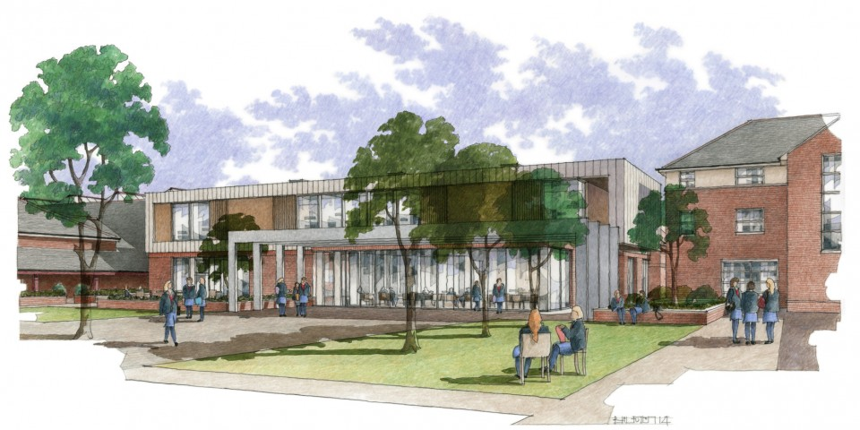

Previous
Next
Queen Anne’s Girls Celebrate A Level Successes
Speech Day and Prize Giving 2015
Get to know Queen Anne’s better
BrainCanDo Two-Day Conference at Queen Anne’s
NEW Planning Permission Approved For Sixth Form Centre
